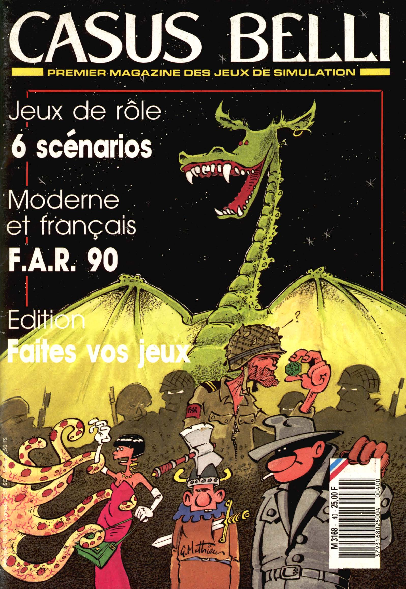

Le Casus 40 de BBE étant disponible, j’ai donc privilégié la lecture alternative du numéro 40 du Casus d’Excelsior qui resplendit sous une couverture de Gérard Mathieu.

Sa parution se fait probablement lors de la rentrée de Septembre, après un été sans grosses actualités donc je ne développerai pas de contexte pour cette fois-ci, celui-ci sera plus fourni pour le prochain numéro ! Tout au plus je noterai que cette rentrée de 1987 voit la première émission du Club Dorothée après que cette dernière ait quitté Antenne 2 pour la TF1 nouvellement privatisée, et que la 5 diffuse à l’époque Robotech (ouais, j’ai un gros souvenir perso dessus).
En guise d’édito, on a le droit à une mini-nouvelle assez savoureuse pour expliquer comment Casus Belli opère sa sélection ludique. Comme l’été vient de se terminer, les Nouvelles du Front regorgent de courts compte-rendus sur les manifestations passées (Parthenay, FSO à Toulon…), et des manifestations à venir, en général aux environs de la Toussaint.
Le calendrier des sorties des éditeurs est bien plus copieux que dans le numéro précédent : il est temps d’attaquer le dernier trimestre de l’année ! Dans les annonces remarquables, on a la sortie de Runequest en VF chez Oriflam et de Star Wars en VO chez WEG, les Années Folles pour l’AdC chez Descartes (tandis que Games Workshop mitonne Green and Pleasant Land sur la Grande-Bretagne) et les Forgotten Realms qui deviennent le nouvel univers officiel AD&D après que Gygax ait été débarqué et ait embarqué Greyhawk : le retour de la vengeance de la revanche ne se fait d’ailleurs pas attendre car c’est aussi à ce moment que paraît Cyborg Commando… tandis que TSR commence à cogiter à une 2ème édition de l’ancêtre… C’est aussi à ce moment pour se couper encore de l’héritage Gygaxien que TSR relance le développement de D&D avec la sortie des Gazeteers de Mystara qui feront date. Bref, suite au départ de Gygax, TSR c’était vraiment mieux avant ?
Sur les critiques, assez peu nombreuses, on trouve du beau monde – les extensions pour Siège / Cry Havoc, le Manual of the Planes pour AD&D – et des choses oubliées mais qui mériteraient d’être redécouvertes : les jeux de plateau Blood Royale (une sorte de Diplo médiéval) et Rogue Trooper (Talisman revisité à la sauce SF) édités par Games Workshop ?
La partie Inspis est toujours logée au début du magazine : dans les BD il sera question du Vent des Dieux, des Héritiers du Soleil (Légendes de la Vallée des Rois allait bientôt paraître, et on annonce même à cette époque un partenariat de diffusion élargie entre Descartes et Glénat, manifestement qui aura fait long feu) et de la Quête de l’Oiseau du Temps. Sur la partie de Roland C Wagner, c’est Soleil pourpre, soleil noir, dernier tome de la tétralogie Les flammes de la nuit de Michel Pagel qui a les honneurs. Personnellement le titre me parle beaucoup moins que ceux des BD évoquées ? Et sur la partie ciné, il sera question des sorties de Tuer n’est pas jouer, qui acte la sortie de Roger Moore comme incarnation de l’agent 007, et des Incorruptibles !
Je continue sur le contenu éditorial avec 3 morceaux de choix : une BD en encart du regretté Tignous qui prouve qu’il collaborait à cette époque de façon intensive à Casus Belli et sur les jeux de rôle, une traduction / adaptation sur deux pages d’un mini jeu pour faire jouer les films d’horreur de série Z (bien avant les publications amateures sur itchio ou le Sombre de @Johan Scipion – Casus hyper visionnaire donc avec les moyens de 1987 mais soyons honnête, les deux pages en question ne sont pas immémorables…). Et enfin un gros article sur le pas encore marronnier Editer son jeu de rôle de Pierre Rosenthal qui de mon point de vue n’a pas pris une ride sur les motivations nécessaires et le processus créatif, à l’exception de la partie maquette / impression. A relire si vous tombez dessus !
Sur la partie scénarios, nous avons le droit à un CB bien fourni avec pas moins de 5 scénarios + un scénario solo dans Laelith. Le meilleur côtoie le pire : le Pendragon (l’affreuse édition de Gallimard d’alors, pas celle d’Oriflam) se veut écrit de façon novatrice comme une nouvelle, et comme une nouvelle, il est donc outrageusement dirigiste. Dans le genre scénario plaisamment rédigé avec notamment des tournures et expressions de l’époque, on a aussi un Trois Mousquetaires de Denis Beck, pas Trois Mousquetaires car il se déroule à escient en 1610 peu avant la mort de Henri IV. Un bon matériel qu’on pourrait reprendre pour Les Lames du Cardinal en décalé aussi, ou encore mieux Te Deum qui s’y prêterait bien même si on est sorti alors des Guerres de Religion (mais pas tant que ça…).
On trouve ensuite un scénario James Bond 007 avec une ambiance et des PNJ sympas, mais une trame à reprendre, et qui m’avait marqué avec des mentions croustillantes pour retrouver un fugitif sur la distinction des phares jaunes en France et blancs en Belgique ! Bref, pas transposable de nos jours, même si c’est un détail. Et puis, surtout pourquoi se priver de le faire jouer en 1987 puisqu’il fournit les statistiques officielles de jeu avec représentation à l’appui de la Peugeot 205 Turbo 16, un sacré numéro !
Tout cela ne nous rajeunit pas comme aussi le scénario Zone avec ses redskins et ses kepons, et une embrouille autour de nanas plutôt sympa, et sans être vulgaire, pour qui voudraient se replonger dans ce jeu vraiment roots (qui a encore le 45 tours de la campagne ?).
On finit cette revue des scénarios avec le pire du lot : un AD&D / Œil Noir construit comme les modules fourre-tout qu’on pouvait trouver à l’époque avec monstres à tous les étages (non ce n’est pourtant pas un donjon), quête héroïque format on sauve le monde alors qu’il s’adresse à des niveaux 4-6, sans oublier les passages avec décisions arbitraires du MJ… Si vous voulez avoir un aperçu de pourquoi les années 1980 pouvaient aussi être moches ou un tenter un challenge vraiment OSR, voilà une belle référence !
Je termine sur le reste du contenu de ce numéro : des aides de jeu diverses de wargame et surtout le morceau de choix, le jeu en encart FAR 90 pour Force d’Action Rapide, qui projette une année 1990 où la Troisième Guerre Mondiale aurait éclaté, manière de rappeler qu’en 1987, même si les wargames OTAN contre Pacte de Varsovie commençaient à ne plus être regardé très sérieusement, le Rideau de Fer est encore une réalité en dur. En tant que production Casus, FAR 90 se veut pour le wargame ce que Laelith (publiée 5 numéros auparavant) a été pour le jeu de rôle : une création originale et d’ampleur. FAR 90 se concentre en effet sur l’armée française moderne, ce qu’on ne retrouve pas dans les wargames anglo-saxons, avec le but de simuler toutes les armes sur un jeu contemporain et à l’échelon tactique. De fait, je crois que ce jeu refera parler de lui pour simuler d’autres affrontements modernes, jusqu’à ce que la chute du Mur de Berlin et la course des années finissent par l’enterrer bien plus durablement que Laelith…
C’est tout pour ce numéro, rdv pour le 41 dans 1d4 mois.